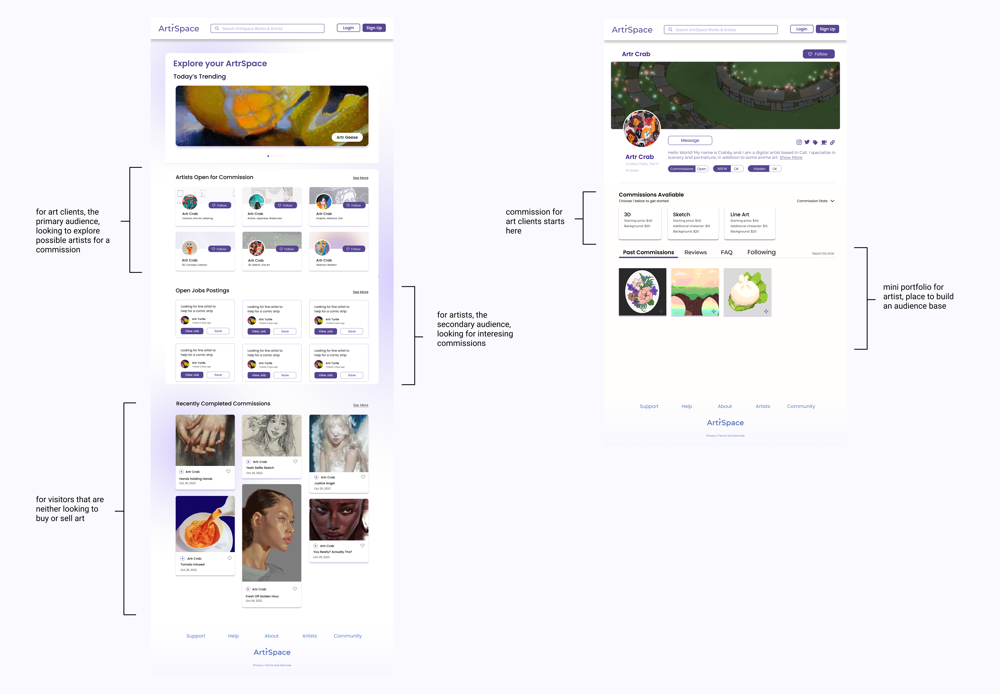

ArtrSpace
UI Design
Team: Yishan Luo, Leilia Lin, Elaine Lin
On-going
ArtrSpace is a concept web app design for a 3rd-party digital art commissioning platform providing a secure, artist-friendly, and exploratory marketplace for artists and patrons.
The Need
Traditional commissioning process is time-consuming and high risk for patrons, while for artists they must heavily depend on outreach and social media, making it hard for small artists to start their journey.
User Research
The team and I had conducted interviews to better understand and empathized with active artists who use social media as commission platform.
Target Audiences
Primary Target Audience: Art Patrons
Art patrons are those who are looking for an artist to commission a piece of work that is catered to the needs of the patron. Patrons may be looking for a specifc art style, price range, and/or expertise. Patrons are primary because artists usually has to use social media as a place to build a client base and advertise for their work.
Artists who are open to working commissions are the audience that ArtrSpace aims to assist. Many artists currently choose to use social media as a place to host their commissions and post their openings. While some find success, some struggle with the inconsistent traction and lack of audience for the type of art they specialize in.
Basic Goals:
- For art patrons ArtrSpace as their go-to search tool for their artwork needs.
- Help artists by providing a platform for them to effciently receive, find, and promote their art commissions.
To meet these goals, the designs of the main page and artist profiles are made with the audiences in mind.
